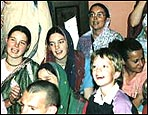
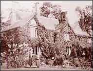
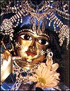
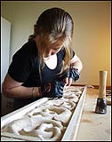
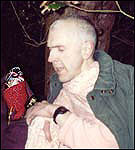

|
Type of centre: Temple
Contact details
Address: Brooklands
140 Upper Dunmurry Lane,
Belfast
Northern Ireland
UK
BT17 0HE |
|
|
Ph: +44-(0)28-90620530
Fax: +44-(0)28-90287685
E-mail: lyall.ward@pamho.net
Web: Radha Madhava's Blog
Website: www.belfast.iskcon.com
Brief details of centre
|
ISKCON Belfast first began in the late 1970s, moving to its
present location in 1985.
There are currently 6 devotees living in the temple with
a congregation of 200.
|
|
 |
|  |
|
Being a listed building (built by one of Belfast's
leading architects in 1909), maintenance and renovation of this
beautiful old building is a constant work in progress. ISKCON
Belfast also plays a role in the Northern Ireland Interfaith
Forum, with two devotees serving on the executive. There are
many preaching programmes in the community throughout the year,
which have resulted in a generally very favourable attitude
towards the devotees in Northern Ireland. |
Deities
Names: Sri Sri Radha
Madhava
Sri Sri Gaura Nitai
When installed: Sri Sri Radha Madhava were first installed
by His Holiness Satsvarupa Dasa Goswami in Dublin in 1983.
They moved to Belfast in 1987.
Sri Sri Gaura Nitai were originally the personal Deities of
Rambhoru Devi Dasi.
|
|
 |
| |
|
Following the
interfaith work of ISKCON Belfast, this photo of Madhava can
be found in every government office, school, and police station
in Northern Ireland, as well as many other private offices and
homes. |
Other:
| In 2001, a new altar was installed.
Hand carved over two years by Veronica Sexton, a devotee master-carver,
the altar incorporates traditional Indian and Irish designs.
The installation was attended by representatives of all
the major faith communities in Northern Ireland, the Arts
Council, and government representatives. There was also favourable
radio and newspaper coverage of the event. |
|
 |
|  |
|
Devotees describe the ornamental
garden as Radha Madhava's garden. In 2001 Sri Sri Radha Madhava
took a closer look at the garden. Following fears of an explosion,
the temple was evacuated for the afternoon. The devotees and
Deities took shelter under a large rhododendron (christened
Radha-dendron). They are pictured here with long-time servant
Nitai Sacinandana Dasa. |
How to get there:
Car: from M1 southbound, turn right at Suffolk exit. First
left, straight through the roundabout, continue past the large white
church, and it is on the left, croner of Brooklands Grange.
From Belfast via Stewartstown Rd. Left at Glengoland roundabout.
200 metres down on the right hand side, corner of Brooklands Grange.
Public transport: Falls Rd taxis or buses to Glengoland
roundabout. Walk down the hill, temple is 200 metres down on the
right hand side, corner of Brooklands Grange.
Train to Dunmurry station. Come out of station onto Upper Dunmurry
Lane. Turn right. Walk 500 metres. Turn left on to main road at
large white church. 100 metres on left at corner of Brooklands Grange.
< Back · Top
^
|
|